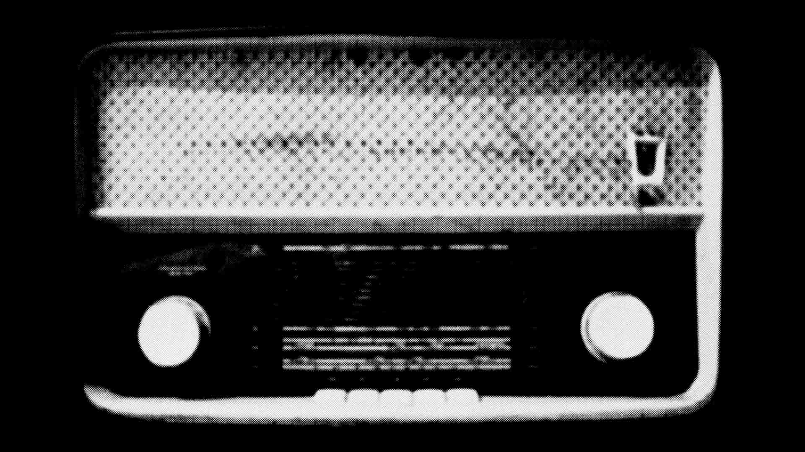

No Longer The Pleasures
By Mark Fisher • I’m obv very pleased with the responses to the Joy Division post (lotsa links, including one from a Spanish site and a Dutch site, neither of which, as a language dimbo, I can understand – and sadly the online translators I tried were not up to the job).
Strikes me that one positive aspect of closing the comments boxes is that it takes things back to the early days of blogs, where people were much more likely to produce longer, thoughtful responses to posts on their own sites. This put blogs somewhere between a static website and a forum, avoiding the closure of the former and the free-for-all openness of the latter. The troll can only thrive on a forum, because there they can assume the role of Bradly Martin antagonist, the voice of faux objectivity, because they never have to lay their own cards on the table. That’s impossible with a blog, which always comes from somewhere, has an agenda, a vision.
re: Amblongus‘ remarks: as it happens, I’m strongly nostalgic for the seventies, for its pre-Style glamour (I wonder if the rise of Style meant the end of Glam/our actually?). Something punctual seemed to happen round about 1982, and as Mark Sinker was saying to me in conversation, Curtis’ death no doubt played an enormous role in that threshold shift into shoulder-padded, glossed-out blandness. The mid to late eighties still produces a shiver of Horror whenever I think back to it… You just have to flick through to the end of the NME’s Goth thing… The Mission, Jesus, a strong candidate to be the worst group ever… That disgusting unkempt long hair, the cowboy boots and spurs, the palpable stench of patchouli oil rising up from every tedious crash chord…
As for Simon: an awful lot here, as always….
Will have to read Norman O Brown, Simon’s obv right….
But I would want to reiterate the point that there is a version of the death drive (namely, Lacan’s) that surpasses both vitalism and a conventional self-destructive sense of the Thanotropic. It’s interesting that Nineties ‘Deleuzianism’ was in effect divided along those lines: in every sense the libidinal wing, occupied by theory renegades such as Nick Land and Iain Hamilton Grant versus the dead hand of sensible, academic careerist vitalism, whose too-numerous-to-name advocates (autopoioeidipalists – as Iain gloriously labelled them) united in the prayer, ’emerge, emerge’ (Iain again).
I remember, in what must have been 1983, asking a fellow JD cultist (being into Joy Division for me was pretty straightforwardly a religion, a cult in the strong sense, a badge of non-membership in the teenage world of empty hedonism): ‘Why is it that negative things are so much more attractive than positive things?’
Seems to me that its crucial to go all the way through the libido of the negative – to utterly resist the commonsense privileging of the vital whilst NOT getting Curtis syndrome. The r and r young death thing was so self-conscious — from what Deborah Curtis says, Ian C was fixated on this since his own teenage years:
‘His fanatacism for David Bowie, and in particular his version of Jacques Brel’s song ‘My Death’, was taken at the time to be a fashionable fascination.’ (5)
‘When Mott the Hoople’s ‘All You Young Dudes’ hit the charts, Ian began to use the lyrics as his creed. He would choose certain songs and lyrics such as ‘Speed child, don’t wanna stay alive when you’re twenty-five’, or David Bowie’s ‘Rock and Roll Suicide’ , and be carried away with the romantic magic of an early death. He idolized people like Jim Morrison who died at their peak. This was the first indication anyone had that he was becoming fascinated with the idea of not living beyond his early twenties, and the start of the glitter and glamour period in his life.’ (7)
Of course all of this is itself a self-conscious echo of the Romantic cult of the dead young poet, which began with Chatterton (the whole myth of which was wonderfully exploded by Ackroyd in his hyperfictional novel)…. But the poet who longs for an early exit is not straightforwardly ‘in love with easeful death’: what he (and the gendered term here is no accident) feared was the intensive death of a life ‘pointlessly’ prolonged into what Kodwo called ‘the coffin of adulthood’. To die prematurely is to be forever young, to attain the ‘cold pastoral’ of Keats’ grecian urn…
But the Lacanian sense of the death drive is neither to do with that, NOR to do with Buddhist cessatation: the death drive is that which is genuinely beyond the pleasure principle. The pleasure principle seeks satiation, the release of tension – which is why the Nirvana principle, the drive towards total quiescence, still belongs to it. Only a drive which is hostile to all closure, all quiescence, moves beyond the organs and the pleasures of the organs. This is what D/G mean by the plateau — and the plateau’s relationship to anti-climactic dance music means there is a way of conceiving of sonic stim which has little to do with the agitational impulses of the organism. Apparently paradoxically, dancing involves a stillness, or rather, an effective stilling of the organism’s endless quest to be always elsewhere (this especially a feature of organisms suffering from TMT, Too Much Testosterone), an enjoyment in and through tension that resists any orgasmic culmination-consummation.
So: for me, it’s always dance, not meditation. The body without organs, not bodilessness. .. . (A whole other post on the route from ‘She’s Lost Control’ through to House is necessary, I think…)
As for the icy calm of Closer: yes… One thing that I heard many times from people on Psych wards that had been very serious and very methodical about ending their lives was the feeling of total calm that came over them when they had really decided to go ahead and do it. That is what is disturbing about the very last Joy Division music, the sense that you are listening to someone who is already dead…
The early 70s thing and speed… yes, obviously what Simon said is true. And yet, I think one thing that has achieved near-consensual support on our part of the blogosphere is the destruction of the myth that the early 70s was a barren period for music. Reading the NME’s Glam thing a few months back, I felt exactly the opposite: that there has never been a more sustained, brilliant period for pop than in those Glam years. Lumpen punk was a tedious r and r distraction, before the Glam Discontinuum resumed in postpunk.
As for the relationship to speed, the drug… well, yes, no doubt downers did gain more prominence in the early 70s… but in the more abstract, McLuhanite sense, pop culture was still ‘speeding’ in the early 70s, still relentlessly hungry for new forms of expression, new connections…. Pop was still modernist in other words… Need to think more about all this, however…
Also got a few things to say about why speed locks into cyberpunk.. but that’ll have to wait… too tired to carry on typing now…
← Back to All Articles